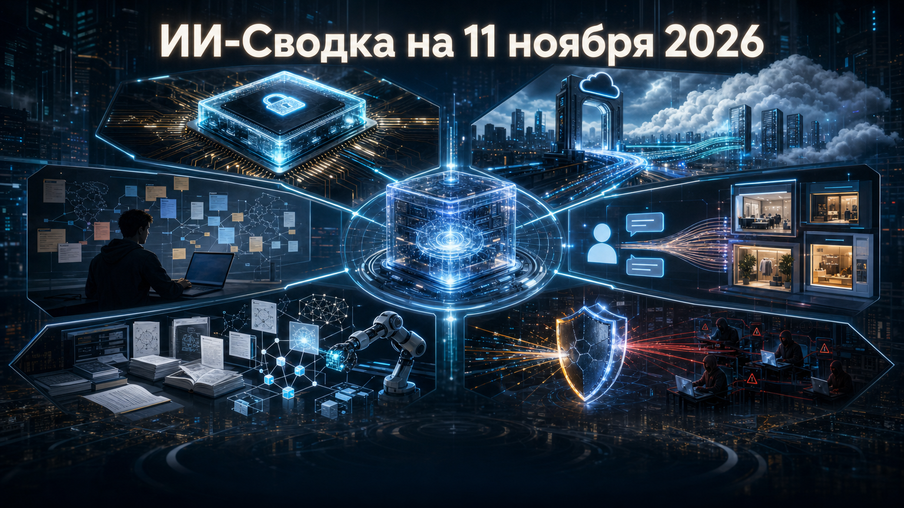

Новостей сегодня меньше, чем обычно
Повестка дня соединяет инфраструктуру, корпоративную дистрибуцию ИИ и безопасность агентных систем. Google уточняет специализацию собственных ускорителей, OpenAI расширяет присутствие ChatGPT в бизнесовых каналах, а исследователи обращают внимание на доступность offensive-инструментов с агентным слоем.
Практический общий вывод: конкуренция смещается от одной только модели к среде её использования — защищённым вычислениям, каналам закупки, данным организаций и контролю доступа к инструментам.
Google Cloud анонсировала два варианта TPU восьмого поколения: TPU 8tx для конфиденциальных вычислений в регулируемых средах и TPU 8i Max для inference-задач с высокими требованиями к памяти. Компания прямо относит к последнему классу reasoning, программирование и агентные приложения.
Это расширяет сегментацию TPU не только по производительности, но и по типу нагрузки: для компаний становятся важны как защита данных, так и способность обслуживать длинные и сложные запросы. Заявленные характеристики и сценарии применения пока исходят от самой Google Cloud; независимых сравнений производительности в пуле нет. Подробнее — в анонсе Google Cloud.
OpenAI объявила, что ChatGPT Enterprise появился в AWS Marketplace. Это означает, что корпоративные заказчики AWS получают ещё один канал для приобретения и администрирования корпоративного доступа к ChatGPT в привычном закупочном контуре облачной платформы.
Для рынка это важнее, чем просто новая витрина: корпоративное внедрение ИИ зависит от совместимости с процедурами закупок, учёта расходов и управления поставщиками. В предоставленных материалах не раскрыты условия продаж, география и технические детали интеграции, поэтому событие следует трактовать как расширение коммерческой дистрибуции, а не как новую облачную модель. Источник — публикация OpenAI.
OpenAI выпустила материал Work at the Frontier: AI’s effect on freelance work, посвящённый воздействию ИИ на фриланс. Сам факт появления отдельной публикации показывает, что разработчик моделей рассматривает независимую занятость как самостоятельный контур изменений на рынке труда, а не только как частный случай автоматизации офисной работы.
В доступном исследовательском пуле не приведены методика, выборка и количественные выводы работы. Поэтому публикацию нельзя использовать как доказательство масштаба вытеснения или роста фриланс-доходов; её корректнее считать новым исследовательским сигналом, который требует чтения первоисточника и сопоставления с независимыми данными. Материал доступен у OpenAI.
OpenAI объявила продуктовый запуск Businesses in ChatGPT. Судя по названию и формату официальной публикации, компания формирует в ChatGPT отдельный сценарий взаимодействия пользователей с бизнесами.
Это продолжает сдвиг чат-интерфейсов от ответов и поиска к прикладным коммерческим действиям. Однако в предоставленном пуле нет подтверждённых сведений о механике сервиса, доступных рынках, партнёрах или финансовой модели; поэтому нельзя заранее приписывать ему функции покупок, бронирования или агентного выполнения задач. Зафиксированный факт — официальный запуск, описанный в публикации OpenAI.
TechRadar со ссылкой на исследование Censys сообщила об обнаружении 1 465 хостов с доступными из интернета консолями ARTEX — агентного слоя над инструментом разведки ScopeSentry. На 155 хостах, по данным публикации, одновременно были замечены Cobalt Strike, Vshell или Adaptix C2; ещё на части ресурсов были открыты директории с эксплойтами и post-exploitation-инструментами.
Наиболее важен здесь не вывод о том, что все найденные установки принадлежат злоумышленникам — такого утверждения исследование не делает, — а снижение порога доступа к offensive-инфраструктуре. Для защитников это повод проверять публичные консоли, доступы, каталоги и связки агентных инструментов с C2-средствами. Количественные данные остаются атрибутированными Censys через медиаисточник; первичный отчёт Censys в пуле не представлен. Подробности — в материале TechRadar.
Российская аналитическая платформа Inventorus объявила о запуске агента «Никола» для работы с научными публикациями и патентными документами. По сообщению компании, инструмент формирует методику поиска, анализирует материалы и выдаёт структурированный отчёт с отображением использованных источников и поисковых запросов.
Сценарий полезен R&D-командам, патентным подразделениям и аналитикам: их узкое место часто состоит не в нахождении одного документа, а в воспроизводимом обзоре большого массива публикаций и заявок. Inventorus заявляет работу с базой свыше 325 млн научных публикаций и 180 млн патентных документов, но независимая оценка качества ответов и масштаб внедрения в материалах не приводятся. О запуске сообщает «Контекст».